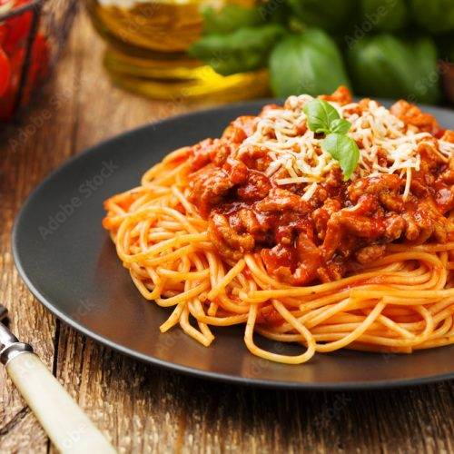

Spaghetti Bolognese

Description
Everyone needs a basic spaghetti bolognese recipe that still tastes great, no matter how simple. Get that depth of flavour by cooking the sauce very gently until it’s super rich. This spag bol is designed to be a low cost recipe.
Ingredients
- 2 table spoons of sunflower oil
- 1 big onion
- 50g of bacon
- 2 cloves of garlic
- 750g of minced meat
- 800g of tomatoes
- 500g of Spaghetti
Steps
- Heat the oil in a large, wide saucepan and fry the onion cut into small cubes.
- Add the minced meat to the saucepan, separating it into small pieces and sear until browned.
- Add a teaspoon tomato paste, stir and sauté for a minute. Then add the chopped tomatoes and their juices to the pot, season with salt, pepper, oregano and bay leaves.
- Bring to the boil, turn the heat down to low and simmer for 2-3 hours with the lid ajar, stirring occasionally. The sauce will thicken and darken, if it burns, cover with a little water and transfer to a smaller burner.
- Serve tossed with cooked spaghetti and sprinkled with grated parmesan cheese.
- Once cooled, you can divide the remaining sauce into individual portions and freeze for stock.
Go back
Recipe source